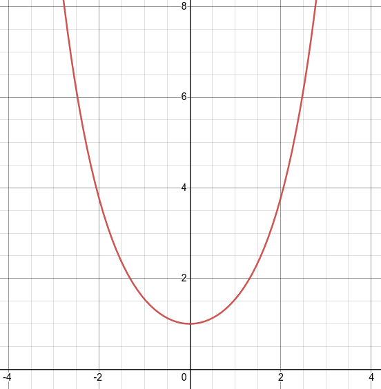
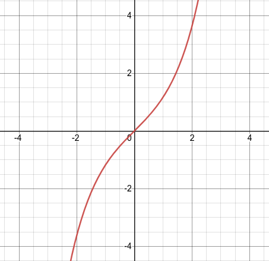
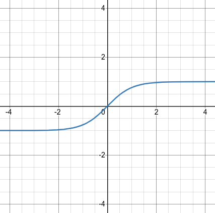

Section 6.6 Hyperbolic Trig Functions
The hyperbolic trig functions are related to the regular trig functions but are defined using the hyperbola rather than the circle. These functions are defined in the following ways:
\(\cosh(x) = \dfrac{e^x+e^{-x}}{2} \mbox{ or } \dfrac{1}{2}e^x + \dfrac{1}{2}e^{-x}\)
Note 6.6.1. Shape of Cosh(x).
Notice that the shape of \(\cosh(x)\) is similar to a parabola.
Figure 6.6.2. hyperbolic cosine of x \(\sinh(x) = \dfrac{e^x-e^{-x}}{2} \mbox{ or } \dfrac{1}{2}e^x - \dfrac{1}{2}e^{-x}\)
Note 6.6.3. Shape of Sinh(x).
Notice that the shape of \(\sinh(x)\) is similar to the function \(y = x^3\text{.}\)
Figure 6.6.4. hyperbolic sine of x \(\tanh(x) = \dfrac{\sinh(x)}{\cosh(x)} \mbox{ or } \dfrac{e^x - e^{-x}}{e^x + e^{-x}}\)
Note 6.6.5. Shape of Tan(x).
Notice that the shape of \(\tanh(x)\) is similar to the shape of \(\tan^{-1}(x)\)
Figure 6.6.6. hyperbolic tangent of x
There are also the reciprocal hyperbolic trig functions that can be determined the same way as regular trig functions. These are called \(\sech(x) \mbox{ , } \csch(x) \text{ , and } \coth(x)\) respectively.
Subsection 6.6.1 Derivatives and Integrals
If \(f(x) = \sinh(x)\) what is \(f'(x)\text{?}\)
Here is a table containing the derivatives of the hyperbolic trig functions:
Function
Derivative
\(\sinh(x)\)
\(\cosh(x)\)
\(\cosh(x)\)
\(\sinh(x)\)
\(\tanh(x) \)
\(\sech^{2}(x)\)
\(\csch(x)\)
\(- \csch(x) \coth(x) \)
\(\sech(x)\)
\(- \sech(x) \tanh(x) \)
\(\coth(x) \)
\(- \csch^2(x) \)
Note 6.6.8. Different Signs.
Notice that these are the same as the derivatives of the regular trig functions except that for two, \(\cosh(x)\) and \(\sech(x)\text{,}\) that have the opposite sign from what might be expected.
Integrals are just the reverse of derivatives:
\(\displaystyle \int \cosh(u) du = \sinh(u) + c \)
\(\displaystyle \int \sinh(u) du = \cosh(u) + c \)
\(\displaystyle \int \sech^2(u) du = \tanh(u) + c \)
etc...